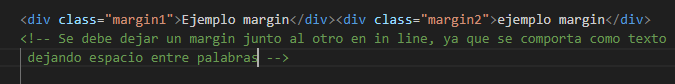
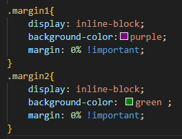
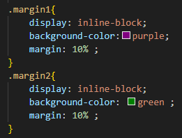

Es la propiedad que ajusta el ancho del elemento con esta clase, su valor se puede dar en cualquier unidad de medida ya sea relativa
o no
Es la propiedad que ajusta el alto del elemento con esta clase, su valor se puede dar tambien en cualquier unidad de medida ya sea relativa
o absolutas
Ya que comprendemos el modelo de caja visto anteriormente el valor de box-sizing se refiere a la forma en que se calcula el tamaño
del elemento, ya que se puede tener en cuenta el marging, el padding y el border, sumandose a la medida de visualizacion
o no sumandose
Es el valor por defecto y significa que el valor que nosotros damos en pixels por ejemplo (medida absoluta), es el valor del elemento
pero si añadimos el border de 10px ahora la medida de nuestro elemento sera la medida
del elemento + esos 10px, es decir 110
Es decir que al final en el navegador el tamaño seria de 130px
En el valor border box los elementos, en este caso el titulo se reduce de medir 100px a 80px, para que en suma con el padding
y el border elemento completo abarque los 100px totales
Se refiere al espacio que encontramos entre un elemento y sus elementos vecionos, es una separacion, igual que otras
propiedades tambien tiene varias propiedades de caracter individual:
margin-top (superior), margin-right (derecha), margin-bottom (inferior9) y margin-left(izquierda)
Se pueden definir todos los margin en una sola linea en el CSS.
El siguiente es un ejemplo de HTML para usar margin
El siguiente es un ejemplo de CSS para usar margin
De esta forma los elementos quedan juntos, pero si se varia el valor tendran separacion
O se pueden simplicar todos, usando, una sola linea
Se debe tener en cuenta, que cuando un elemento con margin esta junto a otro con margin, se suma en el espacio
El margin de uno y otro, es decir si tienen 5px de margin cada uno, entonces entre los dos abra 10PX